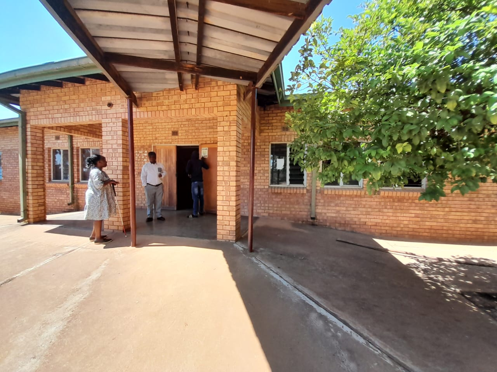
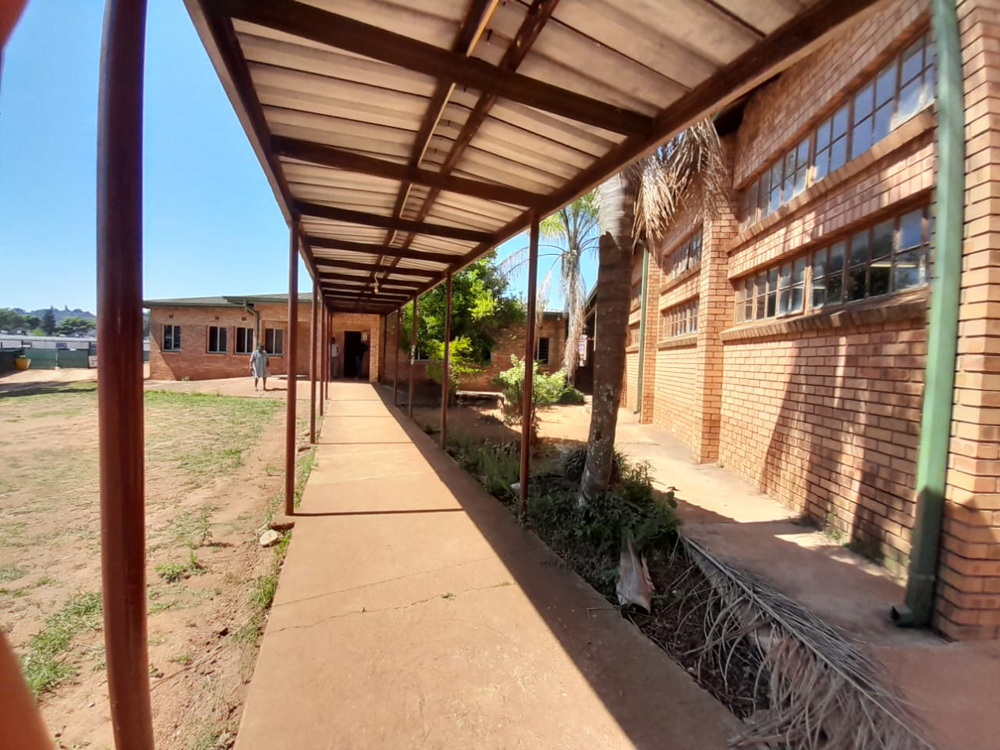
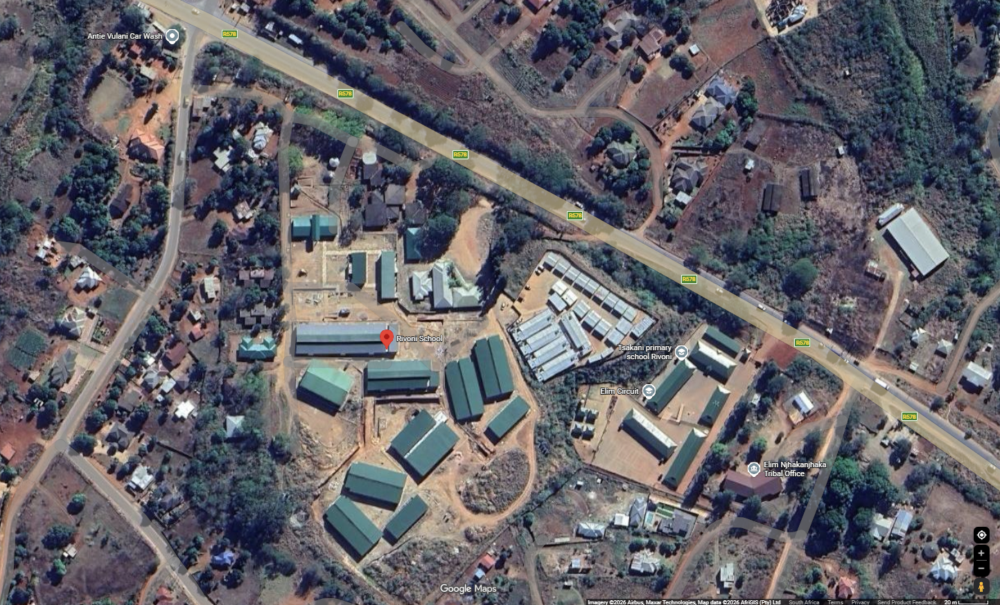

Rivoni Society for the Blind is dedicated to the rehabilitation, education and empowerment of visually impaired children and adults in Limpopo.
50+ Years of changing lives

To empower the visually impaired through holistic rehabilitation, education, and community support.

About Us
Rivoni Society for the blind was founded in 1976 at Elim Hospital in the area of Elim waterval road. As an initiator, Erica Sutter soon realized the need for urgent measures to prevent Trachoma,a Highly contagious eye disease resulting in eventual blindness..
Rivon society for the blind is a non-profitable organisation that aims to better the life of visually impared south africans.The majority of South Africa's visually disabled people live in rural areas. Their visual impairment is partly due to the endemic nature of the diseases Glaucoma and Trachoma, and other poverty related conditions. Conversely, opportunities for rehabilitation, training and employment, and access to special services are generally minimal or non-existent in rural areas. Back in 1975 this hopeless situation existed for an estimated 6% (251 000) of the citizens of Limpopo Province.
This was the case prior to the founding of the Rivoni Society for the blind at Elim, a hospital 25 kilometers south of Louis Trichardt (Makhado) in the heart of the far northern rural Limpopo area. The organisation was an initiative of the late Dr Erika Sutter who was working at the Elim Hospital Eye Department. Rivoni was established in 1976.
For the past 50 years of the organisation's existence, Rivoni remained one of the biggest and well reputable NGOs serving the needs of the blind and partially sighted among a population of 4.2 million. Though situated within the Vhembe District, Rivoni operates provincially and goes beyond the boundaries of the Limpopo Province and it is the only institution offering comprehensive and recognized services, e.g. after training blind students are absorbed into mainstream education, while adults are placed in income generating projects. This shows the importance of the services that Rivoni is rendering, which explicitly indicates the lack of relevant support in the rural communities of the Limpopo Province:
Rehabilitation is the right of every blind person. It not only improves their quality of life dramatically, but also contributes to the further development of the communities in which they live, through employment and income generation. Rivoni Society for the Blind has for the past 46 years given independence training to almost 14,890 visually impaired men, women and children.
They have gained freedom of movement and access to education and basic human life needs necessary for every person's daily living. Many have been able to enter mainstream educational lives through to university. Others are gainfully employed in professional designations in both government and private sectors, while some are in income generating projects initiated by Rivoni. Limpopo Province is a vast rural area and there are a large number of blind and partially sighted people waiting in hopelessness to make something worthwhile of their lives.
Rehabilitation
Programs
Community
Support
Skills
Development
Inclusive
Education
Rehabilitation Programme
Visually impared people are identified and recruited to undergo an intensive orientation and mobility Trainning. Rivoni society operates nationally and goes beyond the boundaries of South africa.The orientation and Mobility Practitioners,also train the visually impaired people in their own respective homes and communities.The department provides training to visually impaired people categorized as totally blind and partially blind,inclusive of independence training.
Placement
Those enrolled in the Mainstream Programme were often employed before losing their sight and had to leave their jobs.
At Rivoni they are trained in Braille and typing, and after completion many return to their professions.
Educators are placed in schools for the blind where they continue to thrive.
ABET
Visually impaired people are taught at levels 1, 2, 3, and 4. They learn Braille, typing, and elementary Braille examination.
On completion, some are placed in tertiary institutions while others secure employment.
Other society activities:
Eye care awareness is delivered at hospitals, health centres, clinics, schools (special and mainstream), government departments, public places such as shopping malls and taxi ranks, and directly to individuals in the community.
076 1944 124/ 081 896 2327
rivonisocietyfortheblind@gmail.com
OR
mmashimbye@gmail.com
PRIVARE BAG X344 ELIM HOSPITAL,
0960, Limpopo, South Africa
Inspired by Tshedza khorimbi
Rivoni is based near Elim Hospital in Limpopo. We serve blind and partially sighted people across the province through rehabilitation, training, and community programmes.
CORNER GIYANI& WATERVAL ROAD, NJHAKANJHAKA VILLAGE, ELIM HOSPITAL, 0960
Contact the numbers listed on the left before visiting so our team can welcome you and assist you.
NH ACCOUNTANTS & INTERNAL AUDITORS, 10 MORGAN STREET, OFFICE 235, MORGAN BUILDING, TZANEEN, 0850. CELL 0823724326.
Our Location
